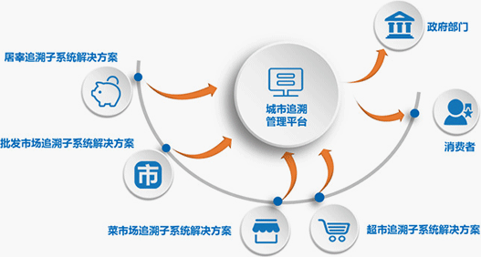

食品安全
重要产品追溯
建设目标
以信息技术为手段，以法规标准为依据，以发展现代流通方式为基础，建设以追溯管理平台为核心，以屠宰环节、批发环节、零售环节追溯子系统为支撑， 一追溯链条完整性管理为重点的农产品流通追溯体系，实现肉类蔬菜来源可追溯、去向可查证、责任可追究，强化政府公共服务，行业自律和消费者相结合的产销机制， 提升流通行业食品安全保障能力。
 城市追溯管理平台
屠宰环节追溯子系统解决方案
批发环节追溯子系统解决方案
零售环节追溯子系统解决方案
城市追溯管理平台
屠宰环节追溯子系统解决方案
批发环节追溯子系统解决方案
零售环节追溯子系统解决方案
业务覆盖范围
我公司具有独到的针对肉菜流通追溯体系的可实施理论，主要思路包括“市场开办者是第一责任人，避免政府承担无限责任”，“部署自上而下采集软件，使用成熟技术，降低运维成"等理论体系，保障追溯体系低成本，高效率，已维护可持续运行。
追溯成功案例
我公司具有独到的针对肉菜流通追溯体系的可实施理论，主要思路包括“市场开办者是第一责任人，避免政府承担无限责任”，“部署自上而下采集软件，使用成熟技术，降低运维成"等理论体系，保障追溯体系低成本，高效率，已维护可持续运行。
食品追溯
食品药片全程追溯系统
通过新一代信息化技术开发的平台化软件，可结合各种硬件设备接口（如RFID、手持PDA），涵盖药品、医疗器械、保健食品、化妆品等。 实现产品从生产环节，批发环节，零售环节和使用环节的全过程可追溯，是监管管理部门能够及时了解基本情况，购销存数据，从而跟踪管辖区域内的经营状态， 以及掌握企业所存在的问题做出快速，到位的反应预处理措施。
系统功能
系统特点
我公司具有独到的针对肉菜流通追溯体系的可实施理论，主要思路包括“市场开办者是第一责任人，避免政府承担无限责任”，“部署自上而下采集软件，使用成熟技术，降低运维成"等理论体系，保障追溯体系低成本，高效率，已维护可持续运行。
企业追溯
企业全产业链追溯系统
为满足企业加强自身竞争力和管理水平的需要，建立相应的信息化平台，基于物联网和组件化技术，提供给企业不同个性化产品，以满足商品追溯的品种多，环节多的实际情况，满足不同企业建设的需要。
建设目的
服务内容
系统功能
实现“全产业链”食品安全管控
以消费者为导向，从产业链源头做起，经过多个关键环节，有措施、有标准的方法来管控食品安全产业链的各个环节，从源头避免食品安全事故发生。
掌握产品真实流向，有效避免恶意窜货事件发生
通过包装上的追溯码，在流通过程中用手机或专业的扫描设备进行信息核实，可以迅速找到相关责任人并予以纠正、处理，有效的避免了产品流通中恶意窜货事件的发生。
反应迅速，降低召回成本
既可以提前发现潜在问题，实施预警，采取适当措施，降低企业风险；又可以有效理清产业链上食品流向，缩短确认问题和召回问题产品的时间，降低召回成本。
确保正品，降低被造假风险
使用加密性好、存储内容丰富的追溯标识，监管人员可以迅速辨识商品真伪。提高造假的难度和成本，也会使造假者望而却步，从而有效的保证了产品正品品质。
强化企业内部信息化建设
总部与生产、人事、财务、销售网点之间的无缝连接进行数据交换，随时掌握销售、库存等信息，合理制定生产采购计划，达到库存均衡状态，提高管理效率。
巩固质量，推进企业品牌效益
通过透明的信息，增强消费者信心，以信誉树立品牌形象；有效的问责机制，可以激励上游供应环节提供质量更高的产品，树立品牌；提高品牌化和差异化。
掌握市场动态，调整产品结构
将处于终端的消费者的需求，通过市场机制和企业计划反馈到前端环节，实现生产与消费的真正连接，促进农产品的生产、品种的优化。